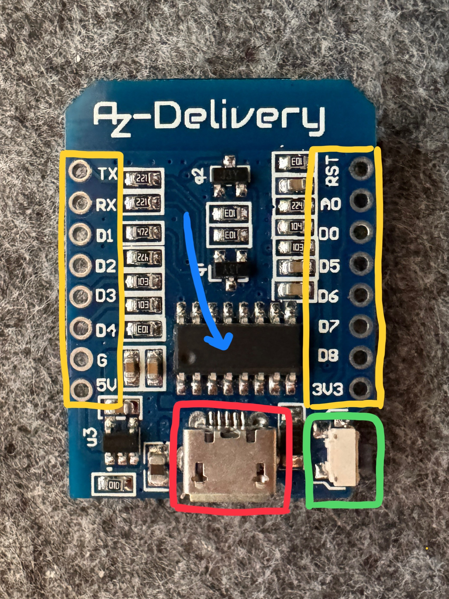
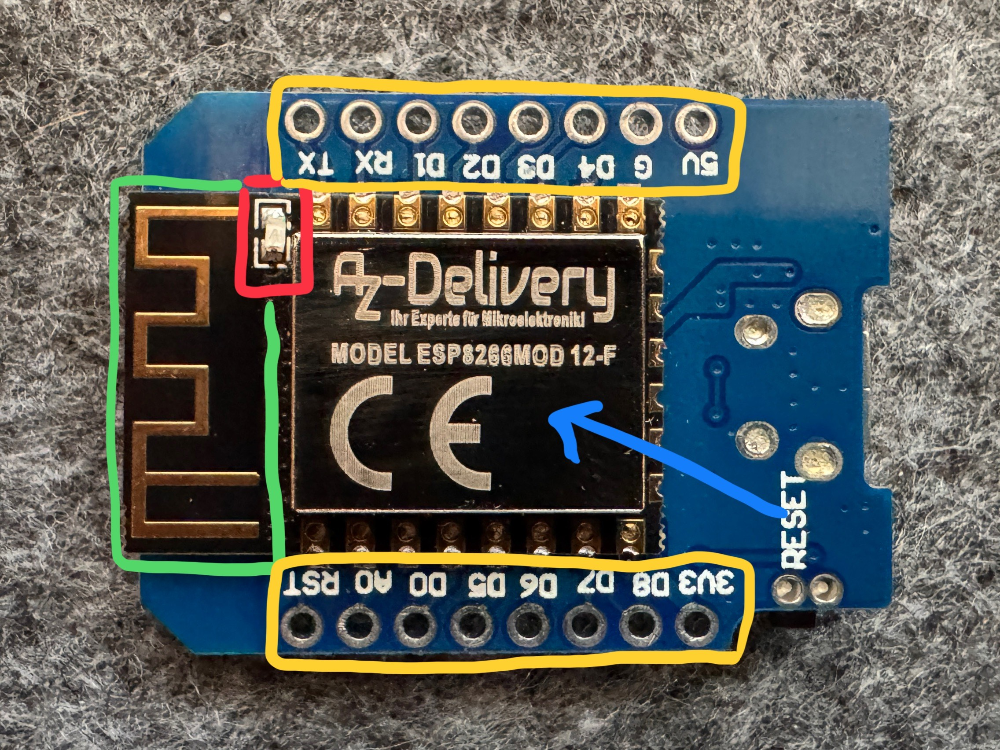

1. About ESP8266
ESP8266 D1 mini
The ESP8266 D1 Mini is a small and powerful microcontroller board that includes a built-in WiFi chip. It is very popular in Internet of Things (IoT) projects because it can easily connect to the internet and control devices wirelessly — for example, lights, sensors, or motors.
The board works like the “brain” of a system: it can be programmed using the Arduino IDE and performs exactly what you instruct it to do, such as measuring temperature, sending data to a website, or turning on an LED when a sensor is triggered. Programs are uploaded via the Micro-USB port.
Why use the D1 Mini?
- It is compact, making it suitable for small projects.
- Has built-in WiFi, perfect for smart home applications and wireless control.
- Compatible with Arduino code, making it easy to program.
- Affordable yet powerful — it can handle multiple tasks at once.
Common use cases
- Send sensor data to a web server.
- Control lighting from a smartphone using Home Assistant or HomeKit.
- Build your own smart door locks, thermometers, or weather stations.
- Automate systems at home or in school projects.
Key components:
- RESET button: Used to restart the microcontroller board.
- ESP8266 WiFi chip: The main component that handles both programming and wireless communication.
- GPIO pins: Used to control LEDs, sensors, motors, and more (D0 to D8, and A0).
- Micro-USB port: Used to upload code and supply power to the board.
ESP8266 seen from above:
Micro-USB Port: This is the small USB connector on the ESP8266 D1 Mini. It serves two important purposes:
- It is used to upload code from your computer to the board using the Arduino IDE.
- It also supplies power (5V) to the board when connected via USB.
RESET Button: This small push button is used to restart the microcontroller. Pressing it will:
- Reboot the chip and restart the current running program from the beginning.
- Help exit from certain error states or reconnect to WiFi if there were issues.
Pin overview (D0–D8, A0, 3V3, 5V, G):
The ESP8266 D1 Mini has several pins (also called headers) that you can use to connect sensors, LEDs, and other electronics. Here's a simple explanation of the most important ones:
- D0 (GPIO16): Can be used for digital input/output. Often used for deep sleep wake-up.
- D1 (GPIO5) & D2 (GPIO4): Standard pins for I²C communication (SCL and SDA).
- D3 (GPIO0): Digital pin, but also used during boot – avoid connecting things directly when uploading code.
- D4 (GPIO2): Digital pin connected to the onboard LED (blue). Good for test LEDs.
- D5 (GPIO14), D6 (GPIO12), D7 (GPIO13), D8 (GPIO15): Used for SPI or as regular digital I/O.
- A0: Analog input (0–3.3V). Use it to read values from sensors like temperature, light, or potentiometers.
Power and Ground pins:
- 3V3: Outputs 3.3 volts – useful for powering sensors that need 3.3V.
- 5V: Outputs 5 volts when powered via USB. Can be used to power external components.
- G: Ground – must be connected to the ground of your circuit. All components need this connection.
Main Chip – ESP8266: This is the actual brain of the D1 Mini. It's a 32-bit microcontroller that includes:
- A CPU running at 80 MHz or 160 MHz
- Built-in WiFi module for wireless communication
- Support for 10 GPIO pins, PWM, I²C, SPI, UART, and more
- About 50 KB RAM for user programs and 4MB flash memory for storing your code
ESP8266 seen from below:
Status LED (Information Light): This small LED (usually blue) is located near the USB port on the D1 Mini. It is connected to pin D4 (GPIO2) and is used to indicate activity or status.
- It can blink to show that code is running or WiFi is connecting.
- You can control it manually using digitalWrite(D4, LOW) or HIGH.
- Useful for debugging and feedback in your project.
WiFi Antenna: The printed metal trace on the top edge of the board is the onboard antenna. It sends and receives radio signals for WiFi communication.
- It's integrated directly onto the PCB – no external antenna needed.
- Ensure it's not blocked by metal or wires for best signal.
- Provides wireless range for IoT applications like sensors or remote control.
Pin overview (D0–D8, A0, 3V3, 5V, G):
The ESP8266 D1 Mini has several pins (also called headers) that you can use to connect sensors, LEDs, and other electronics. Here's a simple explanation of the most important ones:
- D0 (GPIO16): Can be used for digital input/output. Often used for deep sleep wake-up.
- D1 (GPIO5) & D2 (GPIO4): Standard pins for I²C communication (SCL and SDA).
- D3 (GPIO0): Digital pin, but also used during boot – avoid connecting things directly when uploading code.
- D4 (GPIO2): Digital pin connected to the onboard LED (blue). Good for test LEDs.
- D5 (GPIO14), D6 (GPIO12), D7 (GPIO13), D8 (GPIO15): Used for SPI or as regular digital I/O.
- A0: Analog input (0–3.3V). Use it to read values from sensors like temperature, light, or potentiometers.
Power and Ground pins:
- 3V3: Outputs 3.3 volts – useful for powering sensors that need 3.3V.
- 5V: Outputs 5 volts when powered via USB. Can be used to power external components.
- G: Ground – must be connected to the ground of your circuit. All components need this connection.
ESP8266 WiFi Chip: This is the main WiFi system-on-chip (SoC) mounted at the center of the board. It's responsible for both internet communication and running your code.
- It connects to your home network or acts as an access point.
- It supports TCP/IP, HTTP, MQTT, and other WiFi protocols.
- This chip is what makes the D1 Mini "smart" and connected.